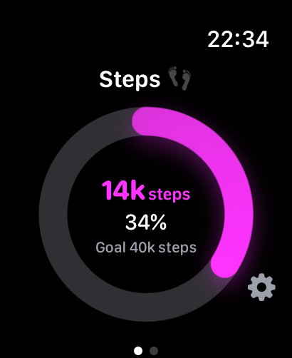
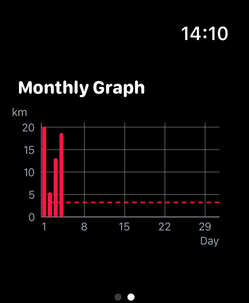
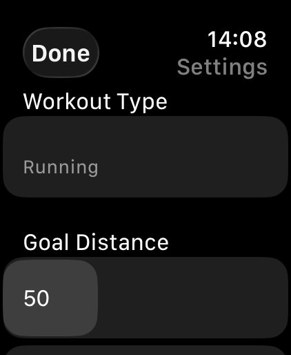
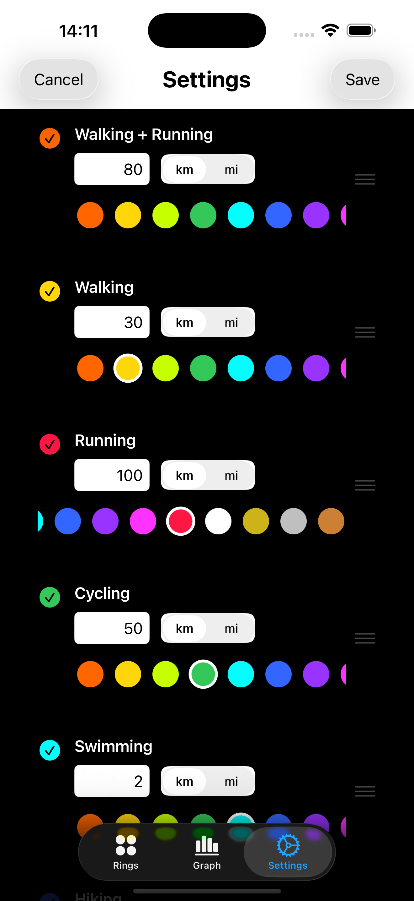
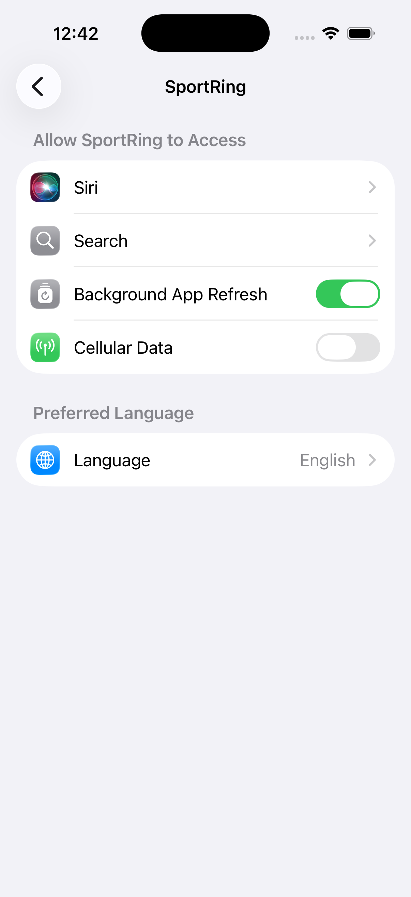
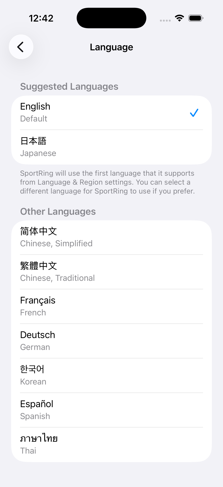

SportRing is an activity management app for Apple Watch that intuitively visualizes your workout distances—Walk, Run, and Cycle—using "Rings." Set your monthly goals and check your daily achievement at a glance. Its clean, minimal design provides effortless support in building your workout habit. Supported languages: English, Japanese, French, German, Spanish, Chinese (Simplified/Traditional), Korean, and Thai.
Check your monthly goals and progress anytime on your wrist.




The iPhone app provides a detailed list of your workouts, allowing you to review your progress alongside beautiful monthly graphs. With iPhone widget support, you can also track your progress right from your Home Screen.


Customize the app to match your style and preferences for a truly personal experience. You can also choose your display language from English, Japanese, French, German, Spanish, Chinese (Simplified/Traditional), Korean, and Thai.


